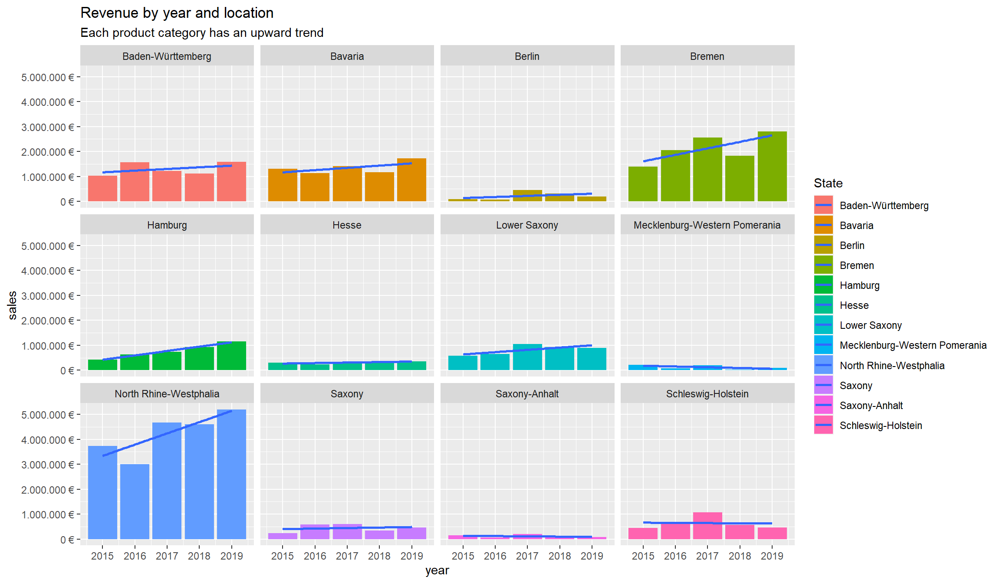
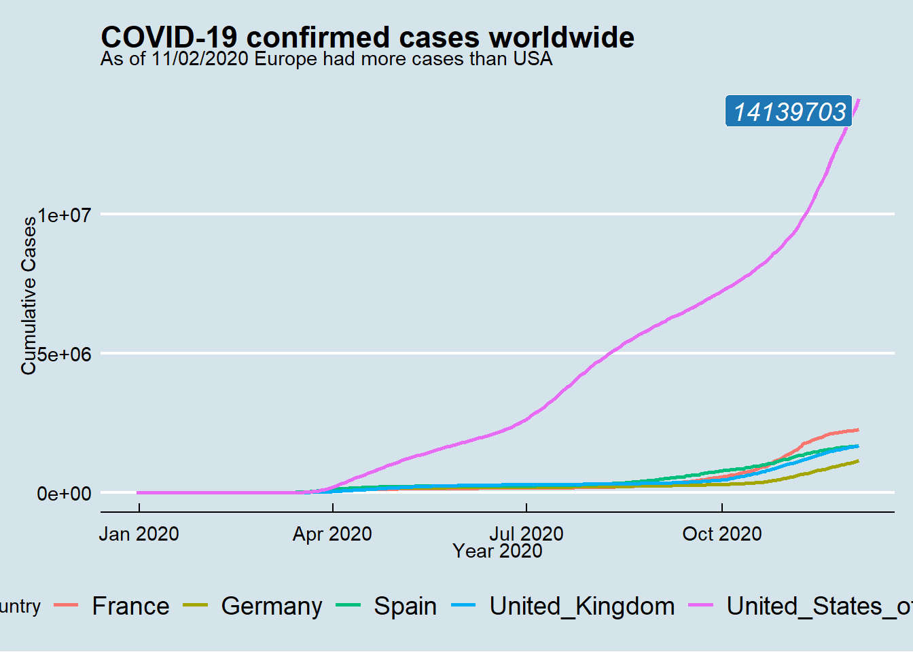

Journal (reproducible report)
Ubaid Ilyas
2020-12-01
1 Chapter 2 Challenges
Last compiled: 2020-12-04
This section will cover the challenges provided at the end of Chapter 2.
# SALES ANALYSIS ----
# 1.0 Load libraries ----
library(tidyverse)
library(lubridate)
library(readxl)
# 2.0 Importing Files ----
bikes_tbl <- read_excel("bikes.xlsx")
orderlines_tbl <- read_excel("orderlines.xlsx")
bikeshops_tbl <- read_excel("bikeshops.xlsx")
# 4.0 Joining Data ----
left_join(orderlines_tbl, bikes_tbl, by = c("product.id" = "bike.id"))%>%
invisible()
bike_orderlines_joined_tbl <- orderlines_tbl %>%
left_join(bikes_tbl, by = c("product.id" = "bike.id")) %>%
left_join(bikeshops_tbl, by = c("customer.id" = "bikeshop.id"))
# 5.0 Wrangling Data ----
bike_orderlines_joined_tbl %>%
select(category) %>%
filter(str_detect(category, "^Mountain")) %>%
unique() %>%
invisible()
bike_orderlines_wrangled_tbl <- bike_orderlines_joined_tbl %>%
separate(col = category,
into = c("category.1", "category.2", "category.3"),
sep = " - ") %>%
mutate(total.price = price * quantity) %>%
select(-...1, -gender) %>%
select(-ends_with(".id")) %>%
bind_cols(bike_orderlines_joined_tbl %>% select(order.id)) %>%
select(order.id, contains("order"), contains("model"), contains("category"),
price, quantity, total.price,
everything()) %>%
rename(bikeshop = name) %>%
set_names(names(.) %>% str_replace_all("\\.", "_"))1.1 Bar Graph for Sales by Location
#6.0 Chapter 2 Challenges ----
#6.1 Sales by State ----
sales_by_state_tbl <- bike_orderlines_wrangled_tbl %>%
separate(col = location,
into = c("city", "state"),
sep = ", ") %>%
group_by(state) %>%
summarise(sales = sum(total_price)) %>%
mutate(sales_text = scales::dollar(sales, big.mark = ".",
decimal.mark = ",",
prefix = "",
suffix = " €"))
sales_by_state_tbl%>%
ggplot(aes(x = state, y = sales)) +
geom_col(fill = "#2DC6D6") +
geom_label(aes(label = sales_text)) +
geom_smooth(method = "lm", se = FALSE) +
scale_y_continuous(labels = scales::dollar_format(big.mark = ".",
decimal.mark = ",",
prefix = "",
suffix = " €")) +
theme(axis.text.x = element_text(angle = 45, hjust = 1)) +
labs(
title = "Revenue by State",
subtitle = "Upward Trend",
x = "", # Override defaults for x and y
y = "Revenue"
)
1.2 Revenue by Year and Location
#6.2 Sales by Year and State ----
sales_by_year_location_tbl<- bike_orderlines_wrangled_tbl %>%
select(order_date, total_price, location) %>%
mutate(year = year(order_date)) %>%
separate(col = location,
into = c("city", "state"),
sep = ", ") %>%
group_by(year, state) %>%
summarise(sales = sum(total_price)) %>%
mutate(sales_text = scales::dollar(sales, big.mark = ".",
decimal.mark = ",",
prefix = "",
suffix = " €"))
sales_by_year_location_tbl %>%
ggplot(aes(x = year, y = sales, fill = state)) +
geom_col() +
geom_smooth(method = "lm", se = FALSE) +
facet_wrap(~ state) +
scale_y_continuous(labels = scales::dollar_format(big.mark = ".",
decimal.mark = ",",
prefix = "",
suffix = " €")) +
labs(
title = "Revenue by year and location",
subtitle = "Each product category has an upward trend",
fill = "State" # Changes the legend name
)
2 Chapter 3 Challenges
Last compiled: 2020-12-04
This section will cover the challenges provided at the end of Chapter 3.
2.1 Data via API
#1.0 Load libraries ----
library(httr)
library(stringr)
library(tidyverse)
library(rvest)
library(jsonlite)
library(scales)
#2.0 Getting Data via API ----
resp<- GET("https://pokeapi.co/api/v2/ability/?limit=50&offset=20")
#3.0 Coversion to Tibble ----
rawToChar(resp$content) %>%
fromJSON() %>%
.[[4]] %>%
.[] %>%
as_tibble()%>%
head(10)## # A tibble: 10 x 2
## name url
## <chr> <chr>
## 1 suction-cups https://pokeapi.co/api/v2/ability/21/
## 2 intimidate https://pokeapi.co/api/v2/ability/22/
## 3 shadow-tag https://pokeapi.co/api/v2/ability/23/
## 4 rough-skin https://pokeapi.co/api/v2/ability/24/
## 5 wonder-guard https://pokeapi.co/api/v2/ability/25/
## 6 levitate https://pokeapi.co/api/v2/ability/26/
## 7 effect-spore https://pokeapi.co/api/v2/ability/27/
## 8 synchronize https://pokeapi.co/api/v2/ability/28/
## 9 clear-body https://pokeapi.co/api/v2/ability/29/
## 10 natural-cure https://pokeapi.co/api/v2/ability/30/2.2 DB based on Model and Price
#4.0 Read in the HTML for the Entire Webpage ----
html <- read_html("https://www.rosebikes.de/fahrr%C3%A4der/kinder")
#5.0 Web Scraping for Model Names ----
model_name <- html %>%
html_nodes(css = ".product-tile__title") %>%
html_text() %>%
stringr::str_replace_all(pattern = "\n\n", replacement = " ") %>%
stringr::str_extract("(?<=\\n).*(?=\\n)")
#6.0 Web Scraping for Prices ----
price <- html %>%
html_nodes(css = ".product-tile-price__current-value") %>%
html_text()%>%
stringr::str_extract(pattern = "[0-9]+") %>%
as.numeric() %>%
dollar(big.mark = ".",
decimal.mark = ",",
prefix = "",
suffix = " EUR")
#7.0 Coversion to Tibble ----
tibble(model_name,price) %>%
head(10)## # A tibble: 10 x 2
## model_name price
## <chr> <chr>
## 1 ROSE NOOB 129 EUR
## 2 Early Rider Charger 12 169 EUR
## 3 Early Rider Belter 14 379 EUR
## 4 Early Rider Seeker 14 399 EUR
## 5 Early Rider Belter 16 399 EUR
## 6 Early Rider Seeker 16 399 EUR
## 7 Early Rider Seeker 20 599 EUR
## 8 Early Rider Belter 20 549 EUR
## 9 Early Rider Belter 24 649 EUR
## 10 Early Rider Seeker 24 724 EUR3 Chapter 4 Challenges
Last compiled: 2020-12-04
This section will cover the challenges provided at the end of Chapter 4.
#1.0 Loading Libraries ----
library(vroom)
library(tidyverse)
library(readr)
library(data.table)#2.0 Generating Data and Converting to DT ----
#2.1 For patent ----
col_types_patent <- list(
id = col_character(),
type = col_character(),
number = col_character(),
country = col_character(),
date = col_date("%Y-%m-%d"),
abstract = col_character(),
title = col_character(),
kind = col_character(),
num_claims = col_double(),
filename = col_character(),
withdrawn = col_double()
)
patent_tb <- vroom(
file = "patent.tsv",
delim = "\t",
col_types = col_types_patent,
na = c("", "NA", "NULL")
)%>% setDT()
#2.2 For assignee ----
col_types_assignee <- list(
id = col_character(),
type = col_integer(),
name_first = col_character(),
name_last = col_character(),
organization = col_character()
)
assignee_dt <- vroom(
file = "assignee.tsv",
delim = "\t",
col_types = col_types_assignee,
na = c("", "NA", "NULL")
) %>% setDT()
#2.3 For patent_assignee----
col_types_patent_assignee <- list(
patent_id = col_character(),
assignee_id = col_character(),
location_id = col_character()
)
patent_assignee_dt <- vroom(
file = "patent_assignee.tsv",
delim = "\t",
col_types = col_types_patent_assignee,
na = c("", "NA", "NULL")
) %>% setDT()
#2.4 For uspc----
col_types_uspc <- list(
uuid = col_character(),
patent_id = col_character(),
mainclass_id = col_character(),
subclass_id = col_character(),
sequence = col_integer()
)
uspc_tb <- vroom(
file = "uspc.tsv",
delim = "\t",
col_types = col_types_uspc,
na = c("", "NA", "NULL")
) %>% setDT() 3.1 Patent Dominance
#3.0 Challenge No.1 ----
#Renaming and Merging
setnames(assignee_dt,"id","assignee_id")
combined_data_c1 <- merge(x = assignee_dt, y = patent_assignee_dt,
by = "assignee_id",
all.x = TRUE,
all.y = FALSE)
#Data Extraction
challenge_1<-combined_data_c1 [type == 2 & !is.na(organization) & !is.na(patent_id) , .N, by = organization][
, max(N), by = organization][
order(V1, decreasing = TRUE)] %>%
head(10)
write_rds(challenge_1 , "challenge_1.rds")c1_result<-read_rds("challenge_1.rds")
c1_result## organization V1
## 1: International Business Machines Corporation 139091
## 2: General Electric Company 47121
## 3: Intel Corporation 42156
## 4: Hewlett-Packard Development Company, L.P. 35572
## 5: Microsoft Corporation 30085
## 6: Micron Technology, Inc. 28000
## 7: QUALCOMM Incorporated 24702
## 8: Texas Instruments Incorporated 24181
## 9: Xerox Corporation 23173
## 10: Apple Inc. 218203.2 Recent Patent Acitivity
#4.0 Challenge No.2 ----
#Renaming and Merging
patent_2019_tb<- patent_tb[ lubridate::year(date) == "2019"]
setnames(patent_2019_tb,"id","patent_id")
combined_data_c2 <- merge(x = combined_data_c1, y = patent_2019_tb,
by = "patent_id",
all.x = TRUE,
all.y = FALSE)
#Data Extraction
challenge_2<-combined_data_c2 [lubridate::year(date) == "2019" & type.x == 2 & !is.na(organization), .N, by = organization][
, max(N), by = organization][
order(V1, decreasing = TRUE)] %>%
head(10)
write_rds(challenge_2, "challenge_2.rds")c2_result<-read_rds("challenge_2.rds")
c2_result## organization V1
## 1: International Business Machines Corporation 9265
## 2: Intel Corporation 3526
## 3: Microsoft Technology Licensing, LLC 3106
## 4: Apple Inc. 2817
## 5: Ford Global Technologies, LLC 2624
## 6: Amazon Technologies, Inc. 2533
## 7: QUALCOMM Incorporated 2359
## 8: Google Inc. 2290
## 9: General Electric Company 1860
## 10: Hewlett-Packard Development Company, L.P. 15893.3 Innovation in Tech
#5.0 Challenge No.3 ----
#Renaming and Merging
memory.limit(size = 150000) %>% invisible() #due to large vector size
combined_data_c3<-merge(x = combined_data_c1, y = uspc_tb,
by = "patent_id",
all.x = TRUE,
all.y = FALSE)
#Data Extraction
challenge_3<-combined_data_c3 [!is.na(patent_id) & !is.na(mainclass_id), .N, by=mainclass_id][
, max(N), by = mainclass_id][
order(V1, decreasing = TRUE)] %>%
head(5)
write_rds(challenge_3, "challenge_3.rds")c3_result<-read_rds("challenge_3.rds")
c3_result## mainclass_id V1
## 1: 257 444181
## 2: 428 412856
## 3: 435 374457
## 4: 514 326452
## 5: 438 2868814 Chapter 5 Challenges
Last compiled: 2020-12-04
This section will cover the challenges provided at the end of Chapter 5.
#1.0 Loading Libraries ----
library(tidyverse)
library(ggplot2)
library(ggrepel)
library(lubridate)
library(ggthemes)
library(maps)
library(data.table)
#2.0 Fetching Data
col_covid <- list(
dateRep = col_date("%d/%m/%Y"),
day = col_double(),
month = col_double(),
year = col_double(),
cases = col_double(),
deaths = col_double(),
countriesAndTerritories = col_character(),
geoId = col_character(),
countryterritoryCode = col_character(),
popData2019 = col_double(),
continentExp = col_character(),
`Cumulative_number_for_14_days_of_COVID-19_cases_per_100000` = col_double()
)
covid_data_tbl <- read_csv("https://opendata.ecdc.europa.eu/covid19/casedistribution/csv", col_types = col_covid)4.1 Cumulative Covid-19
#3.0 Challenge No.1
#Wrangling Data
covid_data_monthly_tbl<-covid_data_tbl%>%
select(dateRep, cases, countriesAndTerritories, continentExp) %>%
mutate(month = month(dateRep)) %>%
filter(countriesAndTerritories %in% c("Germany", "United_Kingdom" , "France" , "Spain", "United_States_of_America")) %>%
arrange(countriesAndTerritories,year(dateRep),month,date(dateRep))%>%
group_by(countriesAndTerritories) %>%
mutate(cum_cases=cumsum(cases)) %>%
ungroup()
max_values <- covid_data_monthly_tbl %>%
filter(countriesAndTerritories == "United_States_of_America")%>%
slice_max(cum_cases)
#Plotting Data
covid_data_monthly_tbl %>% ggplot(aes(x = date(dateRep), y = cum_cases, color = countriesAndTerritories)) +
geom_line(size = 1)+
expand_limits(y = 3e6) +
theme_economist() +
theme(
legend.position = "bottom" ,
plot.title = element_text(face = "bold"),
plot.caption = element_text(face = "bold.italic")) +
labs(
title = "COVID-19 confirmed cases worldwide",
subtitle = "As of 11/02/2020 Europe had more cases than USA ",
x = "Year 2020",
y = "Cumulative Cases",
color = "Country"
) + geom_label_repel(aes(x = dateRep, y = cum_cases, label = cum_cases),
data = max_values,
show.legend = F,
size = 5,
fill = "#1f78b4",
color = "white",
fontface = "italic")
4.2 Cumulative Covid-19
#4.0 Challenge No.2
#Wrangling Data
world <- map_data("world")
set_data<- covid_data_tbl %>%
mutate(across(countriesAndTerritories, str_replace_all, "_", " ")) %>%
mutate(countriesAndTerritories = case_when(
countriesAndTerritories == "United Kingdom" ~ "UK",
countriesAndTerritories == "United States of America" ~ "USA",
countriesAndTerritories == "Czechia" ~ "Czech Republic",
TRUE ~ countriesAndTerritories
))
setnames(set_data,"countriesAndTerritories","region")
covid_deathrate_tbl<-set_data %>%
select(deaths, region, popData2019) %>%
group_by(region) %>%
mutate(death_rate=(sum(deaths)/popData2019)) %>%
ungroup()
covid_data_deathrate_tbl<-aggregate(x= covid_deathrate_tbl$death_rate,
by= list(covid_deathrate_tbl$region),
FUN=max)
setnames(covid_data_deathrate_tbl,"Group.1","region")
setnames(covid_data_deathrate_tbl,"x","death_rate")
#Plotting Data
plot_data<-merge(x = world, y = covid_data_deathrate_tbl,
by = "region",
all.x = TRUE,
all.y = FALSE)
ggplot(plot_data, aes(fill = death_rate)) +
geom_map(aes(map_id = region), map = world)+
scale_fill_gradient(low = "#1f78b4", high = "#2d142c", labels = scales::percent)+
expand_limits(x = plot_data$long, y = plot_data$lat)+
labs(
title = "Confirmed COVID-19 deaths relative to size of the population",
subtitle = "More than 1.2 Million confirmed COVID-19 deaths worldwide ",
x = "Longitude",
y = "Latitude"
)